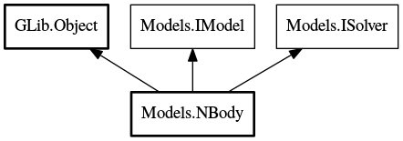

NBody
Object Hierarchy:

Description:
public class NBody :
Object,
IModel,
ISolver
Hamiltonian model for Newtonian N body orbits
Content:
Creation methods:
- public NBody (Body[] bodies, double g, double errorLimit)
Public constructor
Methods:
- private double separation (Body i, Body j)
Euclidean distance between two bodies, i and j
- private void trackCentreOfMass ()
Compensate for drift in centre of mass
- private double h ()
- public void qUpdate (double d)
- public void pUpdate (double c)
- public int64[] solve (Integrator integrator, double step, double start, double end, int64 tr)
Externally visible method. It sets up, controls and terminates the
simulation, writing its data to stdout.
- private void output (double time, double hNow, double h0, double error)
Write the simulated data to STDOUT as a JSON string
Fields:
Inherited Members:
All known members inherited from class GLib.Object
- @new
- new_valist
- newv
- new_with_properties
- add_toggle_ref
- add_weak_pointer
- bind_property
- connect
- constructed
- disconnect
- dispose
- dup_data
- dup_qdata
- freeze_notify
- @get
- get_class
- get_data
- get_property
- get_qdata
- get_type
- getv
- notify_property
- @ref
- ref_sink
- replace_data
- replace_qdata
- remove_toggle_ref
- remove_weak_pointer
- @set
- set_data
- set_data_full
- set_property
- set_qdata
- set_qdata_full
- setv
- steal_data
- steal_qdata
- thaw_notify
- unref
- watch_closure
- weak_ref
- weak_unref
- notify
- ref_count
All known members inherited from interface Models.IModel
All known members inherited from interface Models.ISolver